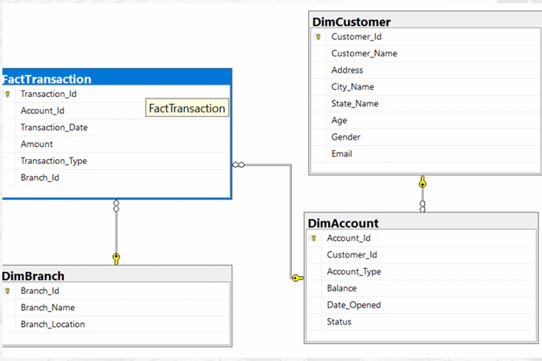
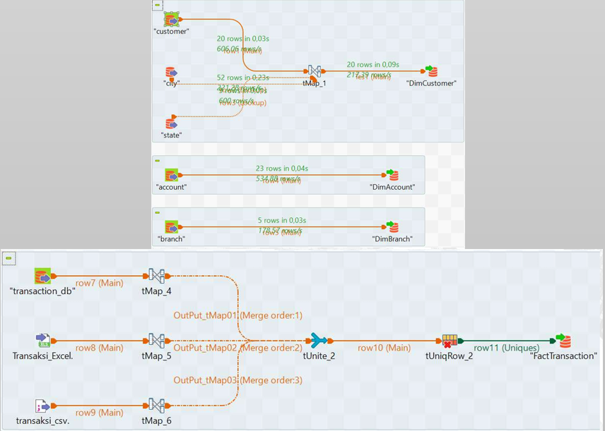

Latar Belakang & Tantangan
Salah satu klien ID/X Partners di industri perbankan mengalami kesulitan dalam mengekstrak dan menganalisis data secara bersamaan dari berbagai sumber (Excel, CSV, SQL Server). Hal ini menyebabkan keterlambatan dalam pelaporan dan pengambilan keputusan. Tantangannya adalah mengintegrasikan sumber data yang berbeda, membersihkan dan mentransformasi data, serta membangun data warehouse yang efisien.
Solusi: Arsitektur Data Warehouse
Saya merancang dan membuat sebuah Data Warehouse (DWH) menggunakan SQL Server dengan skema bintang (star schema). DWH ini terdiri dari tabel fakta (FactTransaction) dan beberapa tabel dimensi (DimCustomer, DimAccount, DimBranch) untuk optimalisasi kueri analisis.
Proses Pembuatan Tabel (SQL)
Berikut adalah contoh kode SQL untuk membuat tabel-tabel dimensi dan fakta.
-- Tabel DimCustomer
CREATE TABLE DimCustomer (
Customer_Id INT PRIMARY KEY NOT NULL,
Customer_Name VARCHAR(50) NOT NULL,
Address VARCHAR(50) NOT NULL,
City_Name VARCHAR(50) NOT NULL,
State_Name VARCHAR(50) NOT NULL,
Age INT NOT NULL,
Gender VARCHAR(50) NOT NULL,
Email VARCHAR(50) NOT NULL
);
-- Tabel DimAccount
CREATE TABLE DimAccount (
Account_Id INT PRIMARY KEY NOT NULL,
Customer_Id INT NOT NULL,
Account_Type VARCHAR(50) NOT NULL,
Balance INT NOT NULL,
Date_Opened DATETIME NOT NULL,
Status VARCHAR(50) NOT NULL,
FOREIGN KEY (Customer_id) REFERENCES DimCustomer(Customer_Id)
);
-- Tabel DimBranch
CREATE TABLE DimBranch (
Branch_Id INT PRIMARY KEY NOT NULL,
Branch_Name VARCHAR(50) NOT NULL,
Branch_Location VARCHAR(50) NOT NULL
);
-- Tabel FactTransaction
CREATE TABLE FactTransaction (
Transaction_Id INT PRIMARY KEY NOT NULL,
Account_Id INT NOT NULL,
Transaction_Date DATETIME2 NOT NULL,
Amount DECIMAL NOT NULL,
Transaction_Type VARCHAR(50) NOT NULL,
Branch_Id INT NOT NULL,
FOREIGN KEY (Account_Id) REFERENCES DimAccount(Account_Id),
FOREIGN KEY (Branch_Id) REFERENCES DimBranch(Branch_Id)
);
Proses ETL (Extract, Transform, Load) dengan Talend
Untuk mengotomatisasi aliran data dari berbagai sumber ke dalam Data Warehouse, saya membangun ETL Job menggunakan Talend. Job ini menggabungkan data dari file Excel, CSV, dan database, melakukan transformasi seperti standarisasi format, dan membersihkan data duplikat sebelum memuatnya ke tabel-tabel di DWH.
Otomatisasi Laporan dengan Stored Procedure
Untuk memudahkan tim analisis mendapatkan ringkasan data dengan cepat, saya membuat dua Stored Procedure utama: `DailyTransaction` untuk ringkasan transaksi harian dan `BalancePerCustomer` untuk melihat saldo terkini setiap nasabah.
-- Stored Procedure 1: DailyTransaction
CREATE PROCEDURE DailyTransaction
@start_date DATE,
@end_date DATE
AS
BEGIN
SELECT
CAST(Transaction_Date AS DATE) AS Date,
COUNT(*) AS TotalTransactions,
SUM(Amount) AS TotalAmount
FROM FactTransaction
WHERE Transaction_Date BETWEEN @start_date AND @end_date
GROUP BY CAST(Transaction_Date AS DATE)
ORDER BY Date;
END;
-- Contoh Eksekusi: EXEC DailyTransaction '2024-01-01', '2024-01-31';
-- Stored Procedure 2: BalancePerCustomer
CREATE PROCEDURE BalancePerCustomer
@name NVARCHAR(100)
AS
BEGIN
SELECT
c.Customer_Name,
a.Account_Type,
a.Balance,
a.Balance + SUM(CASE WHEN t.Transaction_Type = 'Deposit' THEN t.amount ELSE -t.amount END) AS CurrentBalance
FROM DimAccount a
INNER JOIN DimCustomer c ON a.customer_id = c.Customer_Id
LEFT JOIN FactTransaction t ON a.account_id = t.Account_Id
WHERE
c.Customer_Name = @name AND
a.status = 'active'
GROUP BY
c.Customer_Name, a.Account_Type, a.Balance;
END;
-- Contoh Eksekusi: EXEC BalancePerCustomer 'SHELLY JUWITA';
Video penjelasan proyek ini dapat dilihat di YouTube: